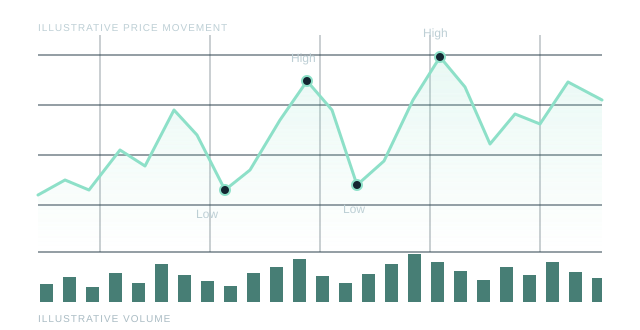

01
Fresh information.
Explore recent company news and online discussion to understand what could be drawing attention to a stock.
News + social momentum
Introducing Woka
Woka is my trading-bot project. The idea is to look for halal stocks with a reason to move, using company news, unusual trading activity and recurring price patterns to investigate potential opportunities.
Pattern research

I'm exploring how these signals could work together with a user's Trading 212 account. Separate components and earlier experiments have shaped the idea; connecting and testing them is the next part of the journey.
Explore the approach01 / The approach
Woka starts with halal suitability, then looks for a compelling combination of news, activity and price behaviour.
Explore recent company news and online discussion to understand what could be drawing attention to a stock.
News + social momentum
Look for stocks trading at a higher volume than usual that day, adding context to the movement in price.
Daily relative volume
Study repeated lows and highs to investigate potential entries and exits. A familiar pattern is a signal to research, not a certainty.
Price behaviour + timing
Halal suitability comes first. Defining and validating the screening criteria is part of the development work.
02 / The planned experience
The ambition is one connected workflow, from a user's Trading 212 account to research-informed trading decisions.
The planned starting point is an API connection to the user's trading account. The account and sign-in experience is still being explored.
Combine screening, news, social activity and market signals to build a fuller picture of each potential opportunity.
Work towards automated decisions and order execution, with testing and confirmation of the platform's supported capabilities.
03 / Behind the build
“I've built different parts of the idea. Now I'm working towards bringing them together.”
Woka builds on separate components and earlier experiments I've developed. It's a way to turn my interest in trading and technology into something practical, while continuing to learn.
Individual components and earlier project ideas explored.
Review the existing pieces, test API capabilities and connect the research workflow.
An independent project by Omari
A trading bot in development, bringing together halal stock screening, fresh news, trading volume and recurring chart patterns.
The vision: connect Trading 212, bring the research together and develop a more informed approach to trading. Built one lesson at a time.
In development Built from curiosity